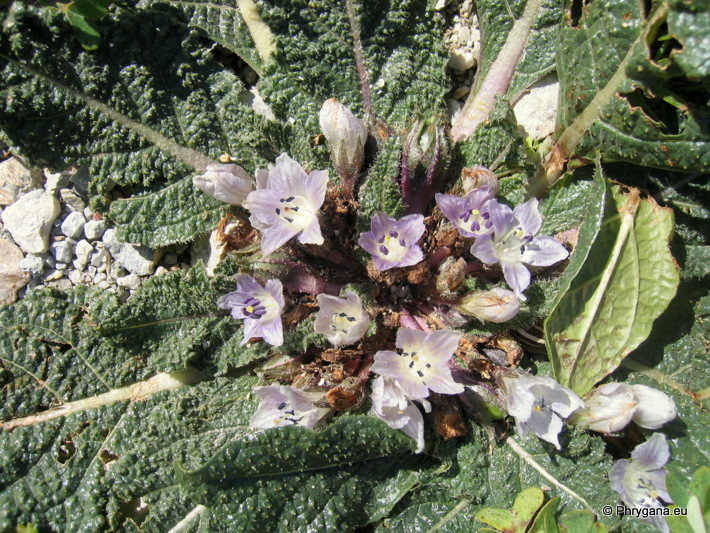
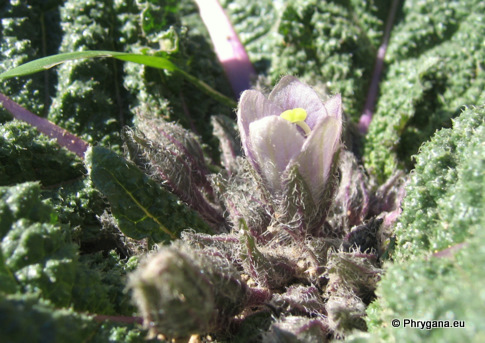
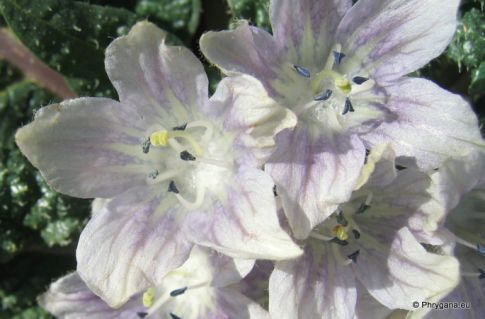
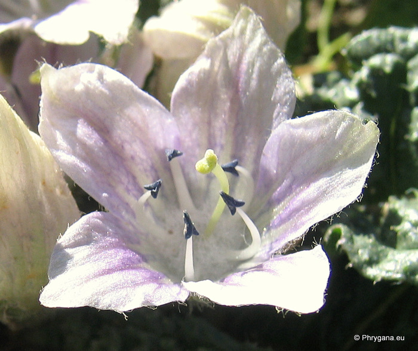
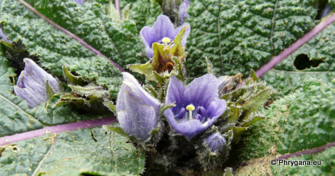
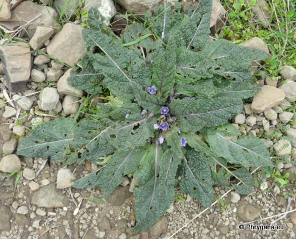
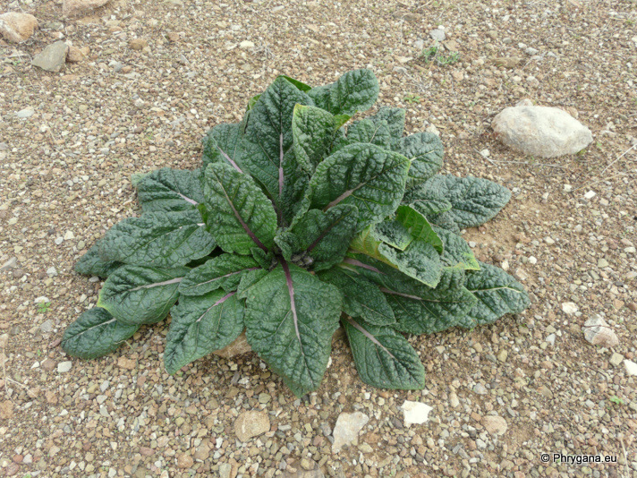
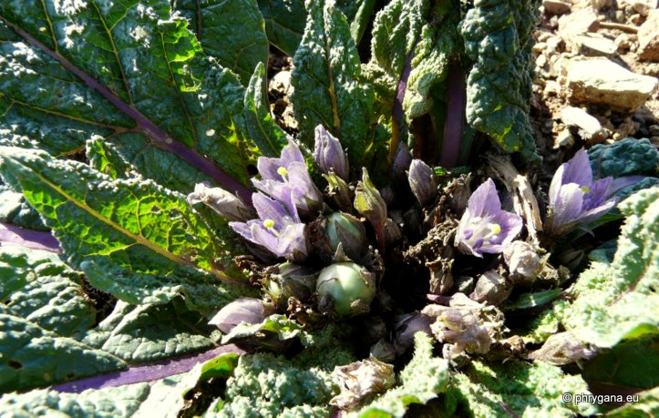
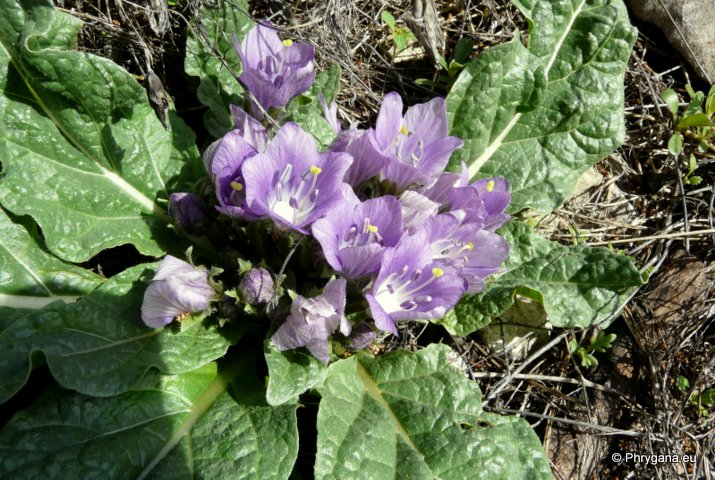

| PHRYGANA | Fauna | Flora | Galles | liste des espèces |
contact -
info - commentaires phrygana1 (at) gmail.com |
| Particularités crétoises | nouveautés | Mines | ressources naturelles |
| Mandragora officinarum L. |
| 198 | Flora | SOLANACEAE | Mandragora L. |
 Mandragora officinarum Agia Galini 15 février 2008 |
| Synonyme: Mandragora autumnalis BERTOL. | |
| Mandrake -- la Mandragore officinale -- la Mandragola -- Μανδραγόρα -- Mandrágora | |
| Feuilles: vert foncé, en rosette prostrée, simples, lancéolées, pétiolées, rarement glabres, ondulées sur les bords, assez grandes (8 - 40 cm x 3 - 18 cm) | |
| Racines épaisses, charnues (tubéreuses), brun foncé, souvent bifides | |
| Fleurs: en cloches (30 - 40 mm) avec des lobes triangulaires, pédonculées, lilas clair à violet vif; anthères violet foncé, à filet blanchâtre; calice fructifère agrandi, pas plus court que le fruit | |
| Fruit: une baie ovale (25 - 30 mm) de couleur jaune à orange à maturité | |
| Hauteur: 10 - 20 cm | Type biologique: hémicryptophyte à rosette |
| Floraison: octobre novembre décembre janvier février mars, avril | |
| Altitudes: Crète entre 0 - 1100 m | |
| Statut en Crète: indigène | |
| Biotopes en Crète: terrains vagues, bords de chemins, olivaies, champs cultivés, crevasses | |
| Distribution: région Méditerranéenne | |
| Belgique: absent | |
| Plante médicinale: parties utilisées: les racines; effet analgésique et somnifère | |
| Remarque: plante vénéneuse | |
  Mandragora officinarum Agia Galini 16 décembre 2007 |
 Mandragora officinarum Agia Galini 16 décembre 2007 |
|

 Mandragora officinarum Melambes (Agios Giorgos) 25 décembre 2009 |
|
 Mandragora officinarum Louros 28 novembre 2010 |
|
 Mandragora officinarum Louros 01 janvier 2010 |
|
 Mandragora officinarum Methoni (Péloponnèse) 14 octobre 2009 |
| 18 février 2013 |
| © paul fontaine -- © Phrygana.eu 2007 -- 2013 |